Art 103 Website - Submissions
WEEK 1
Group work No.1: Charles Graciano - Mengshi Chen - Ericka Zhang - Almarie Mercado
Group name : DE$IGN3RZ (Erika) weixia zhang: weixiao.zhang@sjsu.edu Charles Graciano: charles.graciano@sjsu.edu Mengshi Chen: mengshi.chen@sjsu.edu Almarie Mercado: acmercado3@gmail.com
SUBMISSIONS
Oblique Strategies and Process


Artist Examples, 3 videos of my style of art and process through creativity development
READING
Reading No.1
Q1: What is a good working definition of what a System is and perhaps what it is not?
A good definition would be a series of interconnectivity as parts of a mechanism. Something that does not work in this topic, in my opinion, would be an organized scheme of method.
Q2: For the 4 system definitions you were to look up please give in your own words what they mean and give an example of them for each case.
Modularity: individual component details ( lincoln logs ).
Decomposability: breaking down of all things organic ( throwing a banana in soil than in the garbage ) .
Emergence: growth, gradual incline / new interactions that build up into something big. (someone’s height piles of dirt)
Chaos Theory: random but organized, ( slinky toys)
Q3: Give us your definition of what Tessellation means and give an example you encountered, not mentioned in the reading.
Tessellation is a variety of shapes that create patterns using tiling techniques. I have seen examples of these Tessellations when learning about commissioned palaces in Turkey and the middle east to worship their beliefs.
Q4: What is The difference between ideas of Modularity and Tessellation? What are the properties that are in opposition with each other?
I feel Modularity is more organized and put together than Tessellations are. Modularities are attentive to details and have a rhythm and Tessellations are interpreted uniformed as well but I feel the key difference between these two is one is meant to be ornate and the other doesn't.
Q5: What is the difference between designing something that has Complexity (aperiodic) vs being Uniform (periodic)
Complexity is irregular, it doesn't have any periodic repetition as for something that is uniform that element’s are recurring.
PHASE 1: Mod and Tessle
4 SYSTEMS
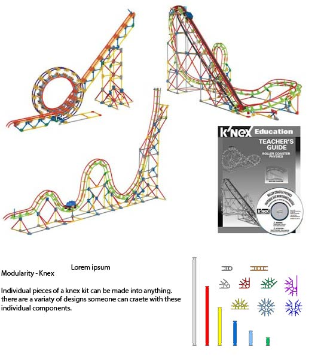

 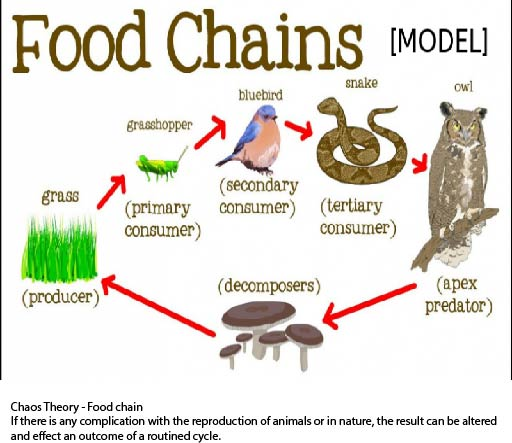
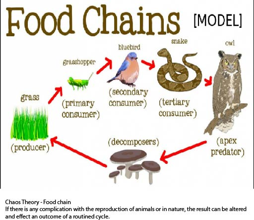
-----------------------DMANIACS-GROUP-PROJECT----------------------

Q3: Give us your definition of what Tessellation means and give an example you encountered, not mentioned in the reading. Tessellation is a variety of shapes that create patterns using tiling techniques. I have seen examples of these Tessellations when learning about commissioned palaces in Turkey and the middle east to worship their beliefs.
Q4: What is The difference between ideas of Modularity and Tessellation? What are the properties that are in opposition with each other? I feel Modularity is more organized and put together than Tessellations are. Modularities are attentive to details and have a rhythm and Tessellations are interpreted uniformed as well but I feel the key difference between these two is one is meant to be ornate and the other doesn't.
Q5: What is the difference between designing something that has Complexity (aperiodic) vs being Uniform (periodic) Complexity is irregular, it doesn't have any periodic repetition as for something that is uniform that element’s are recurring.
PHASE 1: Mod and Tessle
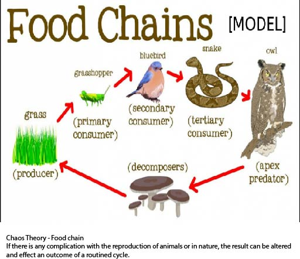
-----------------------DMANIACS-GROUP-PROJECT----------------------
Benji Norman ; Andy Wu ; Sabrina Chan ; Charles Garciano
Phase 2: FASTENERS
the idea behind this idea is to create a Fastener using paper amterial or anything that can be best suited for you.
I choice Cardboard since this was the only materail around the house I had a lot of.
The Box I chose to craete my Fastener had subtractive and additive indents which made my idea come together smoothly.


Phase 3 - 7
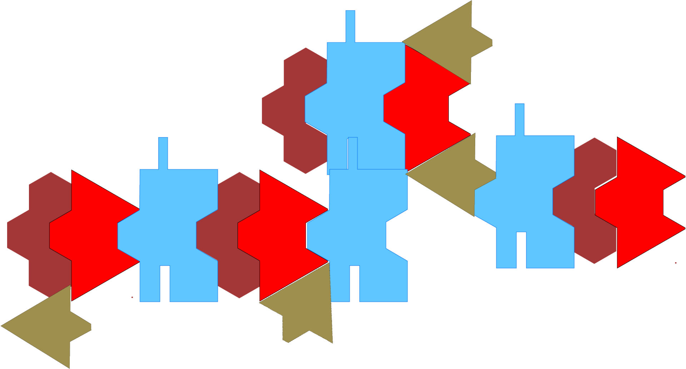a group effort in putting my idea for the fastener to create a tesselation piece where modular shapes ( created by each individual of our group) connect to one another.

we decided to use wood for our material of fasterners and go through the laser cut process at san jose state art dept.
 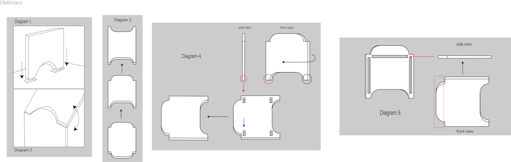
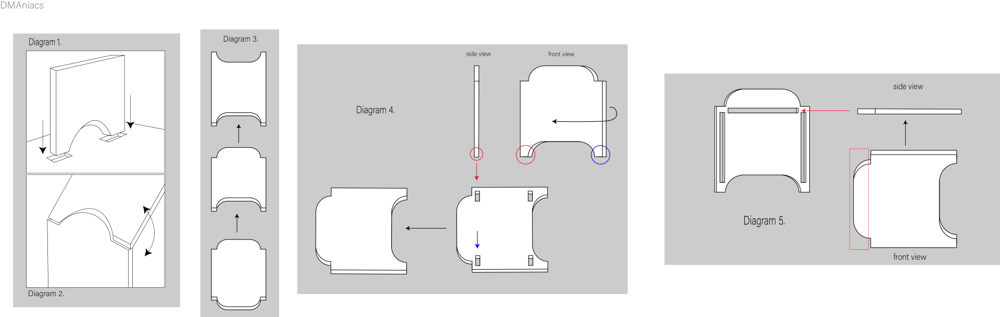
above are the following instructions for the game we have createed tessealation pieces cut (below)
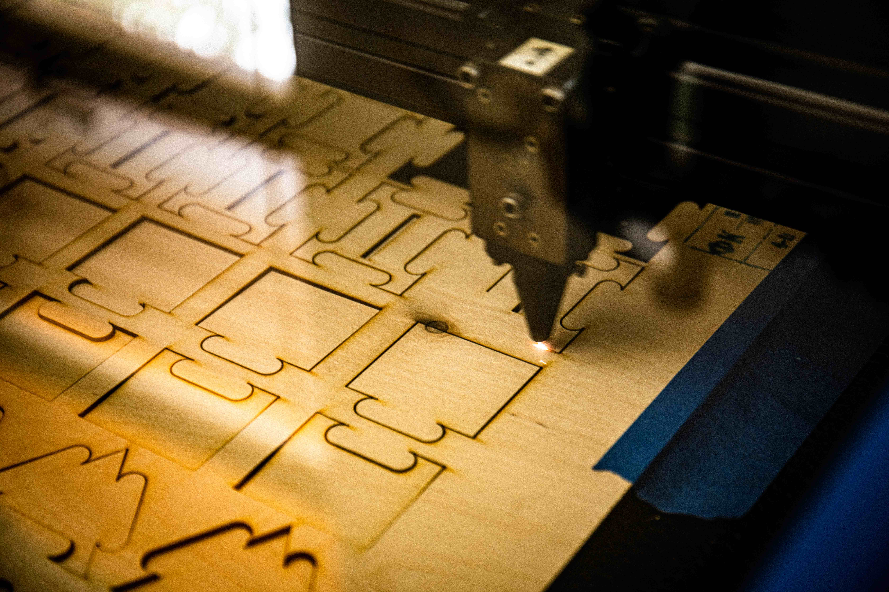


we decided as a group to paint the shapes using four diffferent colors. The two provided (below) are some examples how wwe painted the objects using acrylic paint. 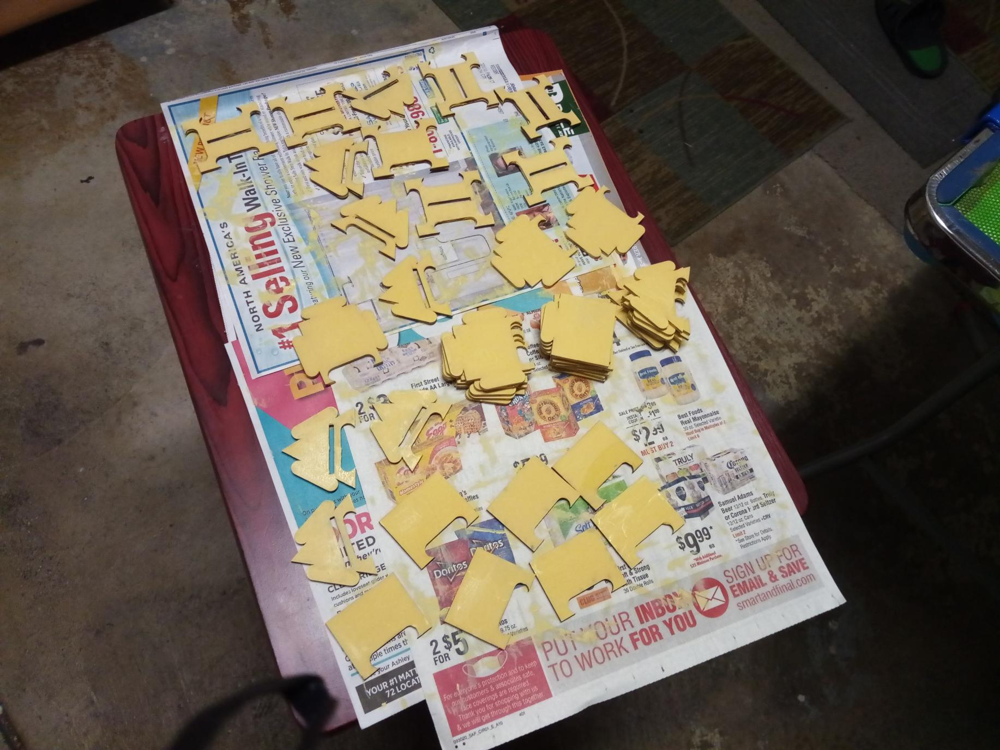 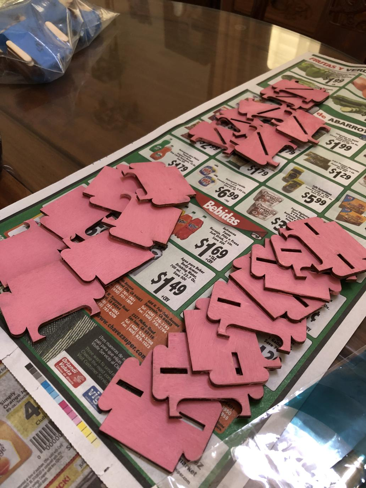
COMPLETED Phase 8

Finshed product of Complexus
SIGNS

 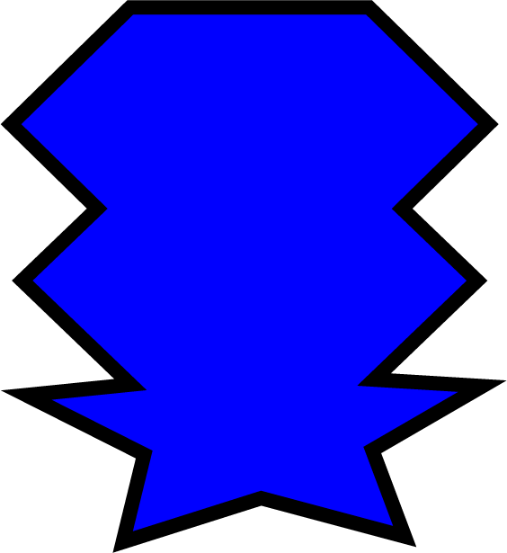
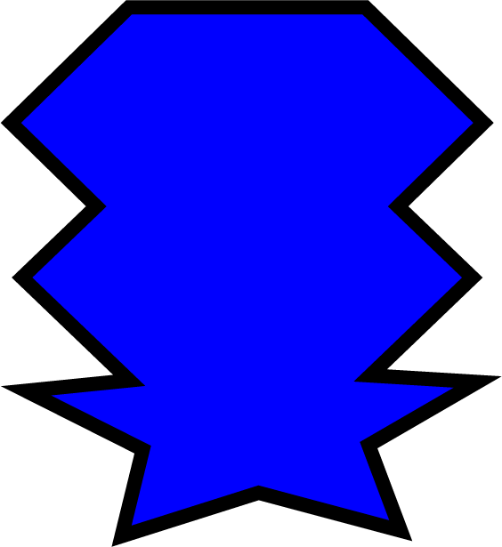


mock ups: these signs are to be placed in thier apropriate locations where the sign makes sense. I decided to work with something playful and something to hopefully bring a little light to whats going on in our world. My idea is to have the viewer smile when they se these signs and also read the as functional works.


3D Renders
These renders demonstrate where these signs actually take place in our real world. I dfelrt these environments are best appropriated with these concepts.
reading
Q1. From the podcast, how has our understanding of what dinoasaurs really look like evolved? Describe the progression of how we portrayed them and how might this effect our understanding of what Archeology is saying about them. - 1. DINOSAURS ARE TOLD TO US AS MONSTERS AND VISUALLY TERRIFYING AND LRGER THAN LIFE. WE INTERPRET THESE CREATURES FROM WHAT WE HEAR AND SEE IN HISTORY AND THIS PODCAST BROUGHT AWARENESS TO ANOTHER POINT OF VIEW FOR VIEWING WHAT POSSIBLY COULD HAVE BEEN THE ACTUAL TRUTH. Q2. The artist/archcologist John Conway who is doing interpretaions of dinosaurs is obviously taking liberty with what could be the actual truth of how these creatures existed. What other disciplines and forms of studies use similer techniques that reminds you of this method or process. Please eloborate with your examples both written as well as images and links. - 2. Interpretations can become reality, for example. When investigating a crime in forensics. The crime is manipulated through creative artists to show a demonstration of the crime scene. Q3. First, summerize in your own words the characteristics of 'Material Speculation' as described in the second article. So given this article's examples for possible future products, how can this same technique also be used to create objects that refer to the past? -3. Reasoning of what happens in a process of rules or predictions.
ARTifact
In a world far away lived a demon who let thousands by the power of his talent. He was a good demon who brought talent and creativity together but was destroyed by his brothers and sisters who didn’t see or understand his power. This led them to spread his body around the entire world so that the all talented and Hulu will not find his pieces and bring himself back together for revenge. Currently, his tooth has mysteriously placed itself in an abandoned chest, seeking its bearer of extraordinary talent to revive the long forgotten Hulu.
For this product I decided to make a 3-D printable guitar pick. The pic is thick and a lot larger than a traditional guitar pick which gives the player the ability to hold the pic in their palm increasing players comfortability and advantage of never dropping their pick while playing again. The pic is oddly shaped, like a tooth. This gives your thumb a comfortable position to hold the pic along with your palm feeling a handle to hold on to the pic while playing. I decided to break up my demonstration in two parts. Part one being in the narrative describing the artifact as a token of extraordinary talent by a demon named Hulu. The second part Showcases the pic and a close-up angle. As you can see the player who is using the pic is using the pic at a natural angle also leaving your wrist and strained after hours of playing.
DEMOS
Behind The Scenes
The making of the Hulu Tooth
The tooth was made in Fusion 360. I was inspired by Shark teeth and other prehistoric fossils so I wanted to capture something that fit those two interests. Once the tooth was designed to my liking, I decided to document an actual version of this model because I wanted to play guiat with it. ALthough it is shaped like a tooth and looks nothing like a traditional guitar pick, I wanted to give it a shot. The final product was a lot larger than a normal guitar pick; the thickness is prominate. The model was printed in a clear arcylic but weathered with black ink, glow in the dark elmers glue and a lot of sanding.
https://sjsu376.autodesk360.com/g/shares/SH56a43QTfd62c1cd968e2121b98f9228717?viewState=NoIgbgDAdAjCA0IDeAdEAXAngBwKZoC40ARXAZwEsBzAOzXjQEMyzd1C0BmXAMwBYARjAAcAgLQQAbAFYYYvhFliBAYzViAnDBUaA7JNwQBECLrQBfEAF0gA